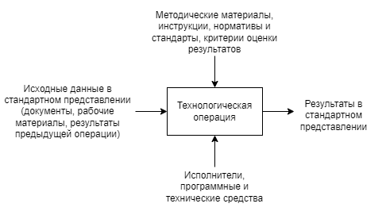
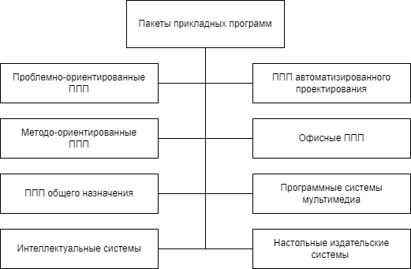
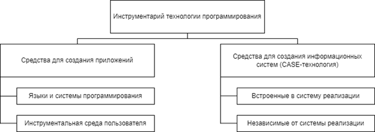
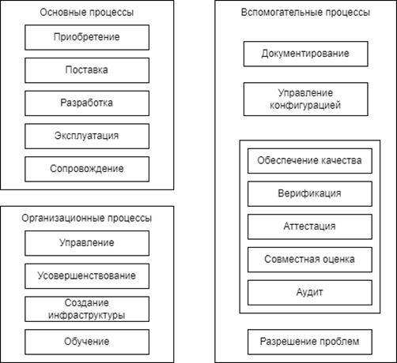
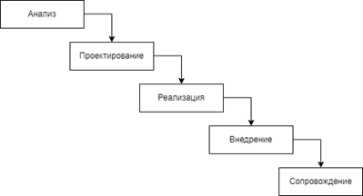
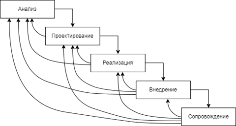
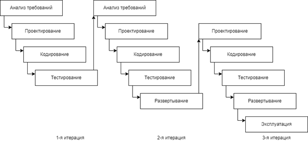
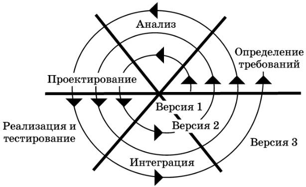

1.1 Основные понятия и определения
Программа (program, routine) — упорядоченная последовательность команд (инструкций) компьютера или операторов для решения задачи. При эксплуатации программы выполняется некоторая работа.
Программное
обеспечение (software) — совокупность
программ обработки данных и необходимых
для их эксплуатации документов.
Задача (problem,
task) — проблема, подлежащая
решению.
Приложение (application) — программная реализация задачи, решенная на компьютере.
Термин
«задача» в программировании означает единицу работы вычислительной системы, требующую
выделения вычислительных ресурсов (процессорного времени, памяти).
Процесс
создания программ можно представить как последовательность следующих действий:
· постановка задачи;
· алгоритмизация решения задачи;
· программирование.
Постановка
задачи (problem definition) — это
точная формулировка решения задачи на компьютере с описанием входной и выходной информации.
Алгоритм — система точно сформулированных правил, определяющая процесс преобразования допустимых исходных данных (входной информации) в желаемый результат (выходную информацию) за конечное число шагов.
Программирование
(programming) — теоретическая и
практическая деятельность, связанная с созданием программ.
По отношению к программному обеспечению (ПО) компьютерные пользователи делятся на следующие группы:
· системные программисты. Занимаются разработкой, эксплуатацией и сопровождением системного программного обеспечения;
· прикладные программисты. Осуществляют разработку и отладку программ для решения различных прикладных задач;
· конечные пользователи. Имеют элементарные навыки работы с компьютером и используемыми ими прикладными программами;
· администраторы сети. Отвечают за работу вычислительных сетей;
· администраторы баз данных. Обеспечивают организационную поддержку базы данных.
Сопровождение программы — поддержка работоспособности программы, переход ее на новые версии, внесения изменений, исправление ошибок и т. д.
Основные характеристики программ:
· алгоритмическая сложность;
· состав функций обработки информации;
· объем файлов, используемых программой;
· требования к операционной системе (ОС) и техническим средствам обработки, в том числе объем дисковой памяти, размер оперативной памяти для запуска программы, тип процессора, версия ОС, наличие вычислительной сети и т. д.
Программный продукт — комплекс взаимосвязанных программ для решения определенной проблемы (задачи) массового спроса, подготовленный к реализации как любой вид промышленной продукции.
Программные продукты (изделия) используются для удовлетворения потребностей пользователей, широкого распространения и продажи. Программная продукция — это программа (программный комплекс, программная система), которую стремятся продать на широком рынке тысячам, миллионам пользователей. Товарное программное обеспечение разрабатывается со специальной целью удовлетворить требованиям максимально большого числа пользователей. Это оказывает влияние на весь жизненный цикл программ, но в наибольшей степени на начальный этап разработки, на определение требований к системе.
Программный продукт должен быть соответствующим образом подготовлен к эксплуатации (отлажен), иметь необходимую техническую документацию, предоставлять сервис и гарантию надежной работы, иметь товарный знак изготовителя, а также код государственной регистрации. Только при таких условиях программный комплекс может быть назван программным продуктом.
Утилитарные программы («программы для себя») предназначены для удовлетворения нужд их разработчиков. Чаще всего утилитарные программы имеют сервисное назначение в технологии обработки данных либо являются программами решения функциональных задач, не предназначенных для широкого распространения.
В настоящее время существуют варианты легального распространения программных продуктов, которые появились с использованием глобальных телекоммуникаций:
· freeware — бесплатные программы, свободно распространяемые, под- держиваются самим пользователем, который правомочен вносить в них необходимые изменения;
· shareware — некоммерческие (условно бесплатные) программы, которые могут использоваться, как правило, бесплатно.
Ряд производителей использует OEM-программы (Original Equipment Manufacturer), то есть встроенные программы, устанавливаемые на компьютеры или поставляемые вместе с компьютерами.
Технология
программирования — совокупность методов и средств, применяемых в процессе
разработки программного обеспечения. Или это система методов, способов и приемов разработки
и отладки программ.
На основании анализа различных
формулировок (политехнический словарь, энциклопедический словарь и др.) под
технологией программирования в широком смысле следует понимать технологию разработки
программного средства как совокупность абсолютно всех технологических процессов
его создания — от момента зарождения идеи о данном программном средстве (ПС) до
составления необходимой программной документации.
Как любая другая технология,
технология программирования представляет собой набор технологических инструкций,
включающих:
· указание последовательности выполнения технологических операций;
· перечисление условий, при которых выполняется та или иная операция;
· описания самих операций, где для каждой операции определены исходные данные, результаты, а также инструкции, нормативы, стандарты, критерии, методы оценки и т.п. (рис 1).

Рисунок 1 – Структура описания технологической операции
Кроме набора операций и их последовательности, технология также определяет способ описания проектируемой системы, точнее модели, используемой на конкретном этапе разработки.
Различают технологии, используемые на конкретных этапах разработки или для решения отдельных задач этих этапов, и технологии, охватывающие несколько этапов или весь процесс разработки. В основе первых, как правило, лежит ограниченно применимый метод, позволяющий решить конкретную задачу. В основе вторых обычно лежит базовый метод или подход, определяющий совокупность методов, используемых на разных этапах разработки, или методологию.
Чтобы разобраться в существующих технологиях программирования и определить основные тенденции их развития, целесообразно рассматривать эти технологии в историческом контексте, выделяя основные этапы развития программирования как науки.
1.2 Типы программного обеспечения
Меняя программы для компьютера, его можно превратить в рабочее место бухгалтера, конструктора, статистика или агронома, редактировать на нем документы или играть в игру. При своем выполнении программы могут использовать различные устройства компьютера для ввода-вывода данных. Таким образом, для эффективного использования персональной электронно-вычислительной машины (ПЭВМ) необходимо знать назначение и свойства необходимых при работе с ним программ.
Все программное обеспечение можно условно разделить
на три типа:
· прикладное программное обеспечение;
· системное ПО;
· инструментальное ПО.
Прикладное ПО служит программным инструментарием решения функциональных задач и является самым многочисленным классом ПО. В данный класс входят программные продукты, выполняющие обработку информации различных предметных областей. Таким образом, прикладное ПО — комплекс взаимосвязанных программ для решения задач определенного класса предметной области.
Пакеты
прикладных программ
Классификация пакетов прикладных
программ (ППП) приведена на рисунке 2.

Рисунок
2 – Классификация пакетов прикладных программ
Проблемно-ориентированные ППП. Для некоторых предметных областей возможна типизация функций управления, структуры данных и алгоритмов обработки. Разработано значительное количество ППП одинакового функционального назначения:
· ППП автоматизированного бухгалтерского учета;
· ППП финансовой деятельности;
· ППП управления персоналом;
· ППП управления производством;
· банковские информационные системы и т. п. Основные тенденции развития:
· создание программных комплексов в виде автоматизированных рабочих мест (АРМ) управленческого персонала;
· создание интегрированных систем управления предметной областью на базе вычислительных сетей, объединяющих АРМы;
· организация данных больших информационных систем в виде распределенной БД на сети ЭВМ;
· наличие простых языковых средств конечного пользователя и др.
ППП автоматизированного проектирования предназначены для поддержки работы конструкторов и технологов, связанных с разработкой чертежей, схем, графическим моделированием и конструированием. Отличительными особенностями этого класса ППП являются высокие требования к аппаратному обеспечению, наличие библиотек встроенных функций, объектов, интерфейсов с графическими системами и БД (AutoCAD).
К
ППП общего назначения относят:
1. Системы управления базами данных (СУБД), обеспечивающие организацию и хранение локальных БД на автономно работающих компьютерах либо централизованное хранение БД на файл-сервере и сетевой доступ к ним. В современных СУБД содержатся элементы CASE-технологии процесса проектирования, в частности:
· визуализирована схема БД;
· осуществлена автоматическая поддержка целостности БД при различных видах обработки (включение, удаление, модификация);
· предоставляются «мастера», обеспечивающие поддержку процесса проектирования;
· созданы шаблоны (прототипы) структур БД, отчетов, форм и т. д.
2. Серверы БД — это ПО, предназначенное для создания и использования при работе в сети интегрированных БД в архитектуре «клиент — сервер». Многопользовательские СУБД в сетевом варианте обработки информации хранят данные на файл-сервере, специально выделенном компьютере, но сама об- работка ведется на рабочих станциях. Серверы БД в отличие от этого большую часть обработки данных (хранение, поиск, извлечение и передачу данных клиенту) выполняют самостоятельно, одновременно обеспечивая данными большое число пользователей сети. Общим для различных видов серверов БД является использование реляционного языка SQL (Structured Query Language) для реализации запросов к данным. Большинство серверов БД поддерживают несколько платформ, широкий спектр протоколов передачи данных. Проблемы — обеспечение целостности данных, тиражирование данных по узлам сети и синхронное обновление.
3. Генераторы отчетов (серверы отчетов), обеспечивающие реализацию запросов и формирование отчетов в печатном или экранном виде в условиях сети с архитектурой «клиент — сервер». Сервер отчетов подключается к серверу БД, использующему драйверы сервиса БД (Crystal Reports, Profit for Windows).
4. Текстовые процессоры, предназначенные для работы с текстовыми документами. Развитием данного направления являются издательские системы (например, Microsoft Word).
5. Табличные процессоры, являющиеся удобной средой для вычислений конечным пользователем, содержат средства деловой графики, средства специализированной обработки (Microsoft Excel).
6. Средства презентационной графики — специализированные про- граммы, предназначенные для создания изображений и их показа на экране, подготовки слайд-фильмов, мультфильмов и их проектирования (Microsoft PowerPoint).
7. Интегрированные пакеты — набор нескольких программных продуктов, функционально дополняющих друг друга, поддерживающих единые информационные технологии, реализованных на единой операционной и вычислительной платформе (Microsoft Office). Компоненты интегрированных пакетов могут работать изолированно друг от друга, имеют общий интерфейс, благодаря этому их проще изучать.
Методо-ориентированные ППП. Данный класс охватывает программные продукты, обеспечивающие независимо от предметной области и функции информационных систем математические, статистические и другие методы решения задач. Наиболее распространены методы математического программирования, решения дифференциальных уравнений, имитационного моделирования, исследования операций (Storm, SYSTAT, SAS и др.).
Офисные ППП. Данный класс охватывает программы, обеспечивающие ориентационное управление деятельностью офиса:
· органайзеры (планировщики) — ПО для планирования рабочего времени, составления протоколов встреч, расписаний, ведение записей и телефон- ной книжки. В состав входят: калькулятор, записная книжка, часы, календарь и т. п.
· программы-переводчики, средства проверки орфографии, распознавания текста (Tiger — система распознавания русского языка, Stylus Lingvo Office, содержащий Fine Reader, Stylus for Windows — переводчик на указанный язык, корректор орфографии Lingvo Corrector и резидентный словарь Lingvo);
· коммуникационные пакеты, предназначенные для организации взаимодействия пользователей с удаленными абонентами или информационными ресурсами сети;
· браузеры, средства создания WWW-страниц;
· средства электронной почты (Pegasys Mail).
Настольные издательские системы. Данный класс ПО включает программы (PageMaker, CorelDraw, Photoshop for Windows и т. д.), обеспечивающие информационную технологию компьютерной издательской деятельности:
· форматирование и редактирование текстов;
· автоматическую разбивку текста на страницы;
· компьютерную верстку печатной страницы;
· монтирование графики;
· подготовку иллюстраций и т. п.
Программные средства мультимедиа. Основное значение данных программных средств — создание и использование аудио- и видеоинформации для расширения информационного пространства пользователя (различные БД компьютерных произведений искусства, библиотеки звуковых записей и т. д.).
Интеллектуальные
системы. К системам искусственного интеллекта относятся:
· программы-оболочки для создания экспертных систем путем наполнения баз знаний и правил логического вывода;
· готовые экспертные системы для принятия решений в рамках определенных предметных областей;
· системы анализа и распознавания речи, текста и т. п.
Примеры систем искусственного интеллекта: FIDE, MYSIN, Guru и др.
Системное ПО
Системное ПО (System Software) — совокупность программ и программных комплексов для обеспечения работы компьютера и вычислительных сетей.
В составе системного ПО можно выделить две составляющие:
1) базовое ПО;
2) сервисное ПО.
Базовое ПО — минимальный набор программных средств, обеспечивающих работу компьютера.
Сервисное ПО — программы и программные комплексы, которые расширяют возможности базового ПО и организуют более удобную среду работы пользователя.
1. Базовое ПО.
В базовое ПО входят:
· операционная система;
· операционные оболочки (текстовые, графические);
· сетевая операционная система.
Компьютер выполняет действия в соответствии с предписаниями программы, созданной на одном из языков программирования. При работе пользователя на компьютере часто возникает необходимость выполнять операции с прикладной программой в целом, организовать работу внешних устройств, проверить работу различных блоков, скопировать информацию и т. д. Эти операции используются для работы с любой программой. Поэтому целесообразно из всего многообразия операций, выполняемых компьютером, выделить типовые и реализовать их с помощью специализированных программ, которые следует принять в качестве стандартных средств, поставляемых вместе с аппаратной частью. Программы, организующие работу устройств и не связанные со спецификой решаемой задачи, вошли в состав комплекса программ, названного операционной системой.
Операционная система (ОС) — совокупность программных средств, обеспечивающих управление аппаратной частью компьютера и прикладными программами, а также их взаимодействием между собой и пользователем.
Операционная система образует автономную среду, не связанную ни с одним из языков программирования. Любая прикладная программа связана с ОС и может эксплуатироваться только на компьютерах, где имеется аналогичная системная среда. Программа, созданная в среде одной ОС, не функционирует в среде другой ОС, если в ней не обеспечена возможность конвертации (преобразования) программ.
Для работы с ОС необходимо овладеть языком этой среды — совокупностью команд, структура которых определяется синтаксисом этого языка.
ОС выполняет следующие функции:
· управление работой каждого блока ПО и их взаимодействием;
· управление выполнением программ;
· организацию хранения информации во внешней памяти;
· взаимодействие пользователя с компьютером (поддержку интерфейса пользователя).
Обычно ОС хранится на жестком диске, а при его отсутствии выделяется специальный гибкий диск, который называется системным диском. При включении компьютера ОС автоматически загружается с диска в оперативную память и занимает в ней определенное место. ОС создается не для отдельной модели компьютера, а для серии компьютеров, в структуру которых заложена и развивается во всех последующих моделях определенная концепция.
Операционные системы для персонального компьютера (ПК) делятся на:
· одно- и многозадачные (в зависимости от числа параллельного выполнения прикладных процессов);
· одно- и многопользовательские (в зависимости от числа пользователей, одновременно работающих с ОС);
· непереносимые и переносимые на другие типы компьютеров;
· несетевые и сетевые, обеспечивающие работу ЭВМ.
· функциональным возможностям вспомогательных программ (утилит) в составе ОС;
· наличию компрессии магнитных дисков;
· возможности архивирования файлов;
поддержке многозадачного режима работы;
· наличию качественной документации;
· условию и сложности процесса инсталляции.
Сетевая ОС — это комплекс программ, обеспечивающий обработку, передачу и хранение данных в сети. Сетевая ОС предоставляет пользователям различные виды сетевых служб (управление файлами, электронная почта, процессы управления сетью и т. д.), поддерживает работу в абонентских системах. Сетевые ОС используют архитектуру «клиент — сервер» или одноранговую архитектуру. Вначале эти ОС поддерживали только локальные вычислительные сети (ЛВС), сейчас они распространяются и на объединения ЛВС.
Операционные оболочки — специальные программы, предназначенные для облегчения общения пользователя с командами ОС. Операционные оболочки имеют текстовый и графический варианты интерфейса конечного пользователя. Наиболее популярны такие текстовые оболочки MS DOS, как Norton Commander, DOS Navigator, Volkov Commander и др. Эти программы существенно упрощают задание управляющей информации для выполнения команд ОС, уменьшают сложность работы конечного пользователя.
2. Сервисное ПО.
Расширением базового ПО компьютера является набор сервисных, дополнительно устанавливаемых программ, которые можно классифицировать по функциональному признаку следующим образом:
· программы диагностики работоспособности компьютера;
· антивирусные программы, обеспечивающие защиту компьютера, обнаружение и восстановление зараженных файлов;
· программы обслуживания дисков, обеспечивающие проверку качества поверхности магнитного диска, контроль сохранности файловой системы на логическом и физическом уровнях, сжатие дисков, резервное копирование данных на внешние носители и др.;
· программы архивирования данных, которые обеспечивают процесс сжатия информации с целью уменьшения объема памяти для ее хранения;
· программы обслуживания сети.
Эти программы часто называют утилитами.
Утилиты — программы, служащие для выполнения вспомогательных операций обработки данных или обслуживания компьютеров.
Инструментальные ПО
Инструментарий технологии программирования обеспечивает процесс разработки программ и включает специализированное ПО, которое является инструментальным средством разработки. ПО данного класса поддерживает все технологические этапы процесса проектирования, программирования, отладки и тестирования создаваемых программ. Пользователями данного ПО являются системные и прикладные программисты.
Инструментарий технологии программирования — это программные продукты, предназначенные для поддержки технологии программирования (рис. 3).
Рисунок 3 – Инструментарий технологии программирования
Средства для создания приложений — совокупность языков и систем программирования, инструментальные среды пользователя, а также различные программные компоненты для отладки и поддержки создаваемых программ.
Язык программирования — это формализованный язык для описания алгоритма решения задач на компьютере. Языки программирования можно условно разделить на следующие классы:
· машинные языки — это языки, воспринимаемые аппаратной частью компьютера (машинные коды);
· машинно-ориентированные языки, отражающие структуру конкретного типа компьютера (ассемблер);
· процедурно-ориентированные языки — это языки, в которых имеется возможность описания программы как совокупности процедур, или подпрограмм (Си#, Паскаль и др.);
· проблемно-ориентированные языки, предназначенные для решения задач определенного класса (ЛИСП, ПРОЛОГ и др.).
Другой классификацией языков является их деление на языки, ориентированные на реализацию основ структурного программирования, основанного на модульной структуре программного продукта и типовых управляющих структурах алгоритмов обработки данных различных программных модулей, и объектно-ориентированные языки, поддерживающие понятия объектов, их свойств и методов обработки.
Системы программирования включают:
· компилятор (транслятор);
· интегрированную среду разработки программ (не всегда);
· отладчик;
· средства оптимизации кода программ;
· набор библиотек;
· редактор связей;
· сервисные средства (утилиты) (для работы с библиотеками, текстовыми и двоичными файлами);
· справочные системы;
· систему поддержки и управления продуктами программного комплекса.
Компилятор транслирует всю программу без
ее выполнения. Интерпретаторы выполняют пооперационную обработку и выполнение
программы.
Отладчики (debugger) — специальные
программы, предназначенные для трассировки и анализа выполнения других
программ. Трассировка — это обеспечение выполнения в пооператорном варианте.
Инструментальная среда пользователя
— это специальные средства, встроенные в пакеты прикладных программ,
такие как:
· библиотека функций, процедур, объектов и методов обработки;
· макрокоманды;
· клавишные макросы;
· языковые макросы;
· конструкторы экранных форм и объектов;
· генераторы приложений;
· языки запросов высокого уровня;
· конструкторы меню и др.
Интегрированные среды разработки программ
объединяют набор средств для их комплексного применения на технологических
этапах создания программы.
Средства для создания информационных
систем (ИС) и технологий поддерживают полный цикл проектирования сложной
информационной системы или технологии от исследования объекта автоматизации до
оформления проектной и прочей документации на информационную систему или
технологию. Они позволяют вести коллективную работу над проектом за счет
возможности работы в локальной сети, экспорта-импорта любых фрагментов проекта,
организации управления проектом.
Одним из современных средств разработки ИС
является CASE- технология (CASE — Computer-Aided System Engineering) — программный
комплекс, автоматизирующий весь технологический процесс анализа,
проектирования, разработки и сопровождения сложных программных систем.
Средства CASE-технологий делятся на:
· встроенные в систему реализации — все решения по проектированию и реализации привязки к выбранной СУБД;
· независимые от системы реализации — все решения по проектированию ориентированы на унификацию (определение) начальных этапов жизненного цикла программы и средств их документирования, обеспечивают большую гибкость в выборе средств реализации.
Основное достоинство CASE-технологии —
это поддержка коллективной работы над проектом за счет возможности работы в
локальной сети разработчиков, экспорта (импорта) любых фрагментов проекта,
организованного управления проектами.
В некоторых CASE-системах поддерживается
генерация кода программ — создание каркаса программ и создание полного продукта.
1.3 Жизненный цикл и этапы разработки программного обеспечения
Программные системы (ПС) и комплексы
программ создаются, эксплуатируются и развиваются во времени.
Жизненный цикл ПС включает в себя все
этапы развития от возникновения потребности в программе определенного целевого
назначения до полного прекращения использования этого ПС вследствие его
морального старения или потери необходимости решения задачи.
По длительности жизненного цикла ПС можно
разделить на два класса: с малым и большим временем жизни.
Программы с малым временем жизни создаются
в основном для получения конкретных результатов вычислений. Эти программы
относительно невелики, разрабатываются одним специалистом или небольшой группой
и не предназначены для тиражирования. Требования к таким программам по
функциональным, конструктивным и качественным показателям контролируются в
основном разработчиками и только иногда представителями заказчика. Основные
затраты в жизненном цикле (ЖЦ) этих программ приходятся на этап системного
анализа и проектирования, который продолжается от месяца до 1–2 лет.
Программы с большим временем жизни
создаются для регулярной обработки информации. Размеры ПС могут изменяться в
широких пределах. Они обладают свойством познаваемости и возможности
модификации в процессе длительного сопровождения и использования различными
специалистами. Их тиражируют, они сопровождаются документацией как промышленные
изделия. Проектированием и эксплуатацией таких ПС занимаются большие коллективы
специалистов, для чего необходимы формализация требуемых технических характеристик,
а также формализованные испытания и определения достигнутых показателей
качества ПС. Большая часть жизненного цикла приходится на эксплуатацию и
сопровождение. Затраты в процессе эксплуатации и сопровождения могут значительно
превышать затраты на системный анализ и проектирование.
Для получения представления о возможной
структуре жизненного цикла ПО необходимо обратиться к соответствующим стандартам,
описывающим технологические процессы и международным организациям:
IEEE — Institute of Electrical and Electronic
Engineers (Институт инженеров по электротехнике и электронике);
ISO — International Standards Organization
(Международная организация по стандартизации);
EIA — Electronic Industry Association (Ассоциация
электронной промыш- ленности);
IEC — International Electrotechnical
Commission (Международная комиссия по электротехнике).
А также к некоторым национальным и
региональным институтам и организациям (американским и европейским, поскольку именно
они оказывают наибольшее влияние на развитие технологий разработки ПО во всем мире):
ANSI — American National Standards
Institute (Американский национальный институт стандартов);
SEI — Software Engineering Institute
(Институт программной инженерии); ECMA — European Computer Manufacturers Association
(Европейская ассоциация производителей компьютерного оборудования).
Разработан набор стандартов, регламентирующих
различные аспекты жизненного цикла и вовлеченных в него процессов.
Состав процессов жизненного цикла регламентируется
стандартом ГОСТ Р ИСО/МЭК 12207-2010 (принят на основании международного стандарта
ISO/IEC 12207:2008 «Information Technologe — Software Life Cycle Processes»,
«Информационные технологии — процессы жизненного цикла программного обеспечения»).
Условность выделения этапов ЖЦ связана с
тем, что на любом этапе возможно принятие решений, которые потребуют пересмотра
решений, принятых ранее. Основные этапы ЖЦ могут быть следующими.
Постановка задачи. В процессе постановки
задачи четко формулируют назначение программного обеспечения и определяют
основные требования к нему. Каждое требование представляет собой описание
необходимого или желаемого свойства программного обеспечения.
Различают
функциональные требования, определяющие функции, которые должно выполнять
разрабатываемое программное обеспечение, и эксплуатационные требования, определяющие особенности его функционирования.
Требования
к программному обеспечению, имеющему прототипы, обычно определяют по аналогии,
учитывая структуру и характеристики уже существующего программного обеспечения.
Для
формулирования требований к программному обеспечению, не имеющему аналогов,
иногда необходимо провести специальные исследования, называемые предпроектными.
В процессе таких исследований определяют разрешимость задачи, возможно,
разрабатывают методы ее решения (если они новые) и устанавливают наиболее
существенные характеристики разрабатываемого программного обеспечения. Для
выполнения предпроектных исследований, как правило, заключают договор на
выполнение научно-исследовательских работ. В любом случае этап постановки задачи
заканчивается разработкой технического задания, фиксирующего принципиальные
требования, и принятием основных проектных решений.
Анализ
требований и определение спецификаций. Спецификациями называют точное формализованное
описание функций и ограничений разрабатываемого программного обеспечения.
Соответственно различают функциональные и эксплуатационные спецификации, а также
спецификацию качества будущего ПО.
Совокупность
спецификаций представляет собой общую логическую модель проектируемого
программного обеспечения. Для получения спецификаций выполняют анализ
требований технического задания, формулируют содержательную постановку задачи,
выбирают математический аппарат формализации, строят модель предметной области,
определяют подзадачи и выбирают или разрабатывают методы их решения. Часть спецификаций
может быть определена в процессе предпроектных исследований и, соответственно,
зафиксирована в техническом задании.
На
этом этапе также целесообразно сформировать тесты для поиска ошибок в
проектируемом программном обеспечении, обязательно указав ожидаемые результаты.
Проектирование.
Основной задачей этого этапа является определение подробных спецификаций
разрабатываемого программного обеспечения. Процесс проектирования сложного программного
обеспечения обычно включает:
· проектирование общей структуры — определение основных компонентов и их взаимосвязей;
· декомпозицию компонентов и построение структурных иерархий в соответствии с рекомендациями блочно-иерархического подхода;
· проектирование компонентов.
Результатом
проектирования является детальная модель разрабатываемого программного
обеспечения вместе со спецификациями его компонентов всех уровней. Тип модели
зависит от выбранного подхода (структурный, объектный или компонентный) и
конкретной технологии проектирования. Однако в любом случае процесс проектирования
охватывает как проектирование программ (подпрограмм) и определение взаимосвязей
между ними, так и проектирование данных, с которыми взаимодействуют эти программы
или подпрограммы.
Принято
различать также два аспекта проектирования:
· логическое проектирование, которое включает те проектные операции, которые непосредственно не зависят от имеющихся технических и программных средств, составляющих среду функционирования будущего программного продукта;
· физическое проектирование — привязка к конкретным техническим и программным средствам среды функционирования, то есть учет ограничений, определенных в спецификациях.
Реализация.
Реализация представляет собой процесс поэтапного написания кодов программы на выбранном
языке программирования (кодирование), их тестирование и отладку.
Сопровождение.
Сопровождение — это процесс создания и внедрения новых версий программного
продукта. Причинами выпуска новых версий могут служить:
· необходимость исправления ошибок, выявленных в процессе эксплуатации предыдущих версий;
· необходимость совершенствования предыдущих версий, например улучшения интерфейса или повышения его производительности, расширения состава выполняемых функций;
· изменение среды функционирования, например появление новых технических средств и/или программных продуктов, с которыми взаимодействует сопровождаемое программное обеспечение.
На
этом этапе в программный продукт вносят необходимые изменения, которые, так же как
в остальных случаях, могут потребовать пересмотра проектных решений, принятых
на любом предыдущем этапе. Роль этого этапа существенно возросла, так как
продукты создаются итерационно: сначала выпускается сравнительно простая
версия, затем следующая с большими возможностями, затем следующая и т. д.
Именно это и послужило причиной выделения этапа сопровождения в отдельный
процесс жизненного цикла в соответствии со стандартом ГОСТ Р ИСО/МЭК 12207-2010.
Структура
ЖЦ ПО по стандарту ГОСТ Р ИСО/МЭК 12207-2010 базируется на трех группах
процессов:
· основные процессы ЖЦ ПО (приобретение, поставка, разработка, эксплуатация, сопровождение);
· вспомогательные процессы, обеспечивающие выполнение основных процессов (документирование, управление конфигурацией, обеспечение качества, верификация, аттестация, оценка, аудит, решение проблем);
· организационные процессы (управление проектами, создание инфраструктуры проекта, определение, оценка и улучшение самого ЖЦ, обучение).
Разработка
включает в себя все работы по созданию ПО и его компонент в соответствии с
заданными требованиями, включая оформление проектной и эксплуатационной документации,
подготовку материалов, необходимых для проверки работоспособности и
соответствующего качества программных продуктов, материалов, необходимых для организации
обучения персонала и т. д.
Эксплуатация
включает в себя работы по внедрению компонентов ПО в эксплуатацию, в том числе конфигурирование
базы данных и рабочих мест пользователей, обеспечение эксплуатационной документацией,
проведение обучения персонала и т. д. А также непосредственно эксплуатацию, в
том числе локализацию проблем и устранение причин их возникновения, модификацию
ПО в рамках установленного регламента, подготовку предложений по
совершенствованию, развитию и модернизации системы.
Управление
проектом связано с вопросами планирования и организации работ, создания
коллективов разработчиков и контроля со сроками и качеством выполняемых работ. Техническое
и организационное обеспечение проекта включает выбор методов и инструментальных
средств для реализации проекта, определение методов описания промежуточных
состояний разработки, разработку методов и средств испытаний ПО, обучение
персонала и т. п. Обеспечение качества проекта связано с проблемами
верификации, проверки и тестирования ПО. Верификация — это процесс определения
того, отвечает ли текущее состояние разработки, достигнутое на данном этапе, требованиям
этого этапа.
Проверка
позволяет оценить соответствие параметров разработки исходным требованиям.
Проверка частично совпадает с тестированием, которое связано с идентификацией
различий между действительными и ожидаемыми результатами и оценкой соответствия
характеристик ПО исходным требованиям. В процессе реализации проекта важное
место занимают вопросы идентификации, описания и контроля конфигурации
отдельных компонентов и всей системы в целом.
Управление
конфигурацией является одним из вспомогательных процессов, поддерживающих основные
процессы жизненного цикла ПО, прежде всего процессы разработки и сопровождения
ПО. При создании проектов сложных ИС, состоящих из многих компонентов, каждый
из которых может иметь разновидности или версии, возникает проблема учета их
связей и функций, создания унифицированной структуры и обеспечения развития
всей системы.
Управление
конфигурацией позволяет организовывать, систематически учитывать и
контролировать внесение изменений в ПО на всех стадиях ЖЦ. Общие принципы и
рекомендации конфигурационного учета, планирования и управления конфигурациями ПО
отражены в стандарте ГОСТ Р ИСО/МЭК 12207-2010.
Каждый
процесс характеризуется определенными задачами и методами их решения, исходными
данными, полученными на предыдущем этапе, и результатами. Результатами анализа,
в частности, являются функциональные модели, информационные модели и
соответствующие им диаграммы. ЖЦ ПО носит итерационный характер: результаты
очередного этапа часто вызывают изменения в проектных решениях, выработанных на
более ранних этапах.
Процесс
жизненного цикла определяется как совокупность взаимосвязанных действий,
преобразующих некоторые входные данные в выходные. На рисунке 4 представлены процессы
жизненного цикла по указанному стандарту.

Рисунок
4 – Структура процессов жизненного цикла программного обеспечения
По стандарту процесс разработки включает следующие действия:
· подготовительная работа — выбор модели жизненного цикла (см. далее), стандартов, методов и средств разработки, а также составление плана работ;
· анализ требований к системе — определение ее функциональных возможностей, пользовательских требований, требований к надежности и безопасности, требований к внешним интерфейсам и т. д.;
· проектирование архитектуры системы — определение состава необходимого оборудования, программного обеспечения и операций, выполняемых обслуживающим персоналом;
· анализ требований к программному обеспечению — определение функциональных возможностей, включая характеристики производительности, среды функционирования компонентов, внешних интерфейсов, спецификаций надежности и безопасности, эргономических требований, требований к используемым данным, установке, приемке, пользовательской документации, эксплуатации и сопровождению;
· проектирование архитектуры программного обеспечения — определение структуры программного обеспечения, документирование интерфейсов его компонентов, разработка предварительной версии пользовательской документации, а также требований к тестам и плану интеграции;
· детальное проектирование программного обеспечения — подробное описание компонентов программного обеспечения и интерфейсов между ними, обновление пользовательской документации, разработка и документирование требований к тестам и плану тестирования компонентов программного обеспечения, обновление плана интеграции компонентов;
· кодирование и тестирование программного обеспечения — разработка и документирование каждого компонента, а также совокупности тестовых процедур и данных для их тестирования, тестирование компонентов, обновление пользовательской документации, обновление плана интеграции программного обеспечения;
· интеграция программного обеспечения — сборка программных компонентов в соответствии с планом интеграции и тестирование программного обеспечения на соответствие квалификационным требованиям, представляющим собой набор критериев или условий, которые необходимо выполнить, чтобы квалифицировать программный продукт как соответствующий своим спецификациям и готовый к использованию в заданных условиях эксплуатации;
· квалификационное тестирование программного обеспечения — тестирование программного обеспечения в присутствии заказчика для демонстрации его соответствия требованиям и готовности к эксплуатации, при этом проверяются также готовность и полнота технической и пользовательской документации;
· интеграция системы — сборка всех компонентов системы, включая программное обеспечение и оборудование;
· квалификационное тестирование системы — тестирование системы на соответствие требованиям к ней и проверка оформления и полноты документации;
· установка программного обеспечения — установка программного обеспечения на оборудовании заказчика и проверка его работоспособности;
· приемка программного обеспечения — оценка результатов квалификационного тестирования программного обеспечения и системы в целом и документирование результатов оценки совместно с заказчиком, окончательная передача программного обеспечения заказчику.
1.4 Модели жизненного цикла ПО
Каскадная модель
Каскадная
модель имела широкое распространение в 1970–1985 гг. Основной характеристикой этой
модели является разбиение всей разработки на этапы, причем переход с одного этапа
на следующий происходит только после того, как будет полностью завершена работа на
текущем (рис. 5). Каждый этап завершается выпуском полного комплекта
документации, достаточной для того, чтобы разработка могла быть продолжена
другой командой разработчиков.

Рисунок 5 – Каскадная схема разработки ПО
Положительные стороны применения каскадного подхода заключаются в следующем:
· на каждом этапе формируется законченный набор проектной документации, отвечающий критериям полноты и согласованности;
· выполняемые в логичной последовательности этапы работ позволяют планировать сроки завершения всех работ и соответствующие затраты.
Каскадный
подход хорошо зарекомендовал себя при построении ПС, для которых в самом начале
разработки можно достаточно точно и полно сформулировать все требования и
предоставить разработчикам свободу реализовать их как можно лучше с технической
точки зрения. В эту категорию попадают сложные расчетные системы, системы
реального времени и другие подобные задачи. Эту модель широко использовало
министерство обороны США в 1970– 1980-х гг. для разработки ПО. Однако в
процессе использования этого подхода обнаружился ряд его недостатков, вызванных
прежде всего тем, что реальный процесс создания ПО никогда полностью не укладывался
в такую жесткую схему. В процессе создания ПО постоянно возникала потребность в
возврате к предыдущим этапам и уточнении или пересмотре ранее принятых решений.
В результате реальный процесс создания ПО принимал вид, показанный на рисунке 6.

Рисунок 6 – Реальный процесс разработки ПО по каскадной схеме
Основным
недостатком каскадного подхода является существенное запаздывание с получением
результатов. Согласование результатов с пользователями производится только в
точках, планируемых после завершения каждого этапа работ, требования к ПС «заморожены»
в виде технического задания на все время ее создания. Таким образом,
пользователи могут внести свои замечания только после того, как работа над системой
будет полностью завершена. В случае неточного изложения требований или их
изменения в течение длительного периода создания ПО пользователи получают
систему, не удовлетворяющую их потребностям.
Итеративные
или инкрементальные модели (известно несколько таких моделей) предполагают
разбиение создаваемой системы на набор кусков, которые разрабатываются с
помощью нескольких последовательных проходов всех работ или их части.
На
первой итерации разрабатывается фрагмент системы, не зависящий от других (рис.
7). При этом большая часть или даже полный цикл работ осуществляются на нем,
затем оцениваются результаты, и на следующей итерации либо первый фрагмент переделывается,
либо разрабатывается следующий, который может зависеть от первого, либо как-то
совмещается доработка первого фрагмента с добавлением новых функций. В
результате на каждой итерации можно анализировать промежуточные результаты работ
и реакцию на них всех заинтересованных лиц, включая пользователей, и вносить
корректирующие изменения на следующих итерациях. Каждая итерация может
содержать полный набор видов деятельности от анализа требований до ввода в
эксплуатацию очередной части ПО.

Рисунок 7 – Возможный ход работ по итеративной модели
Каскадная
модель с возможностью возвращения на предшествующий шаг при необходимости пересмотреть
его результаты становится итеративной.
Итеративный
процесс предполагает, что разные виды деятельности не привязаны намертво к
определенным этапам разработки, а выполняются по мере необходимости, иногда
повторяются до тех пор, пока не будет получен нужный результат.
Вместе
с гибкостью и возможностью быстро реагировать на изменения, итеративные модели
вносят дополнительные сложности в управление проектом и отслеживание его хода.
При использовании итеративного подхода значительно сложнее становится адекватно
оценить текущее состояние проекта и спланировать долгосрочное развитие событий,
а также предсказать сроки и ресурсы, необходимые для обеспечения определенного качества
результата.
Спиральная
модель
Спиральная
модель получила широкое распространение в конце 1980-х — начале 1990-х гг. Она
была предложена Б. Боэмом (Boehm) для преодоления перечисленных проблем, которые
были у каскадной модели ЖЦ. Спиральная модель (рис. 8) делает упор на начальные
этапы ЖЦ: анализ и проектирование. На этих этапах реализуемость технических
решений проверяется путем создания прототипов. Каждый виток спирали соответствует
созданию фрагмента или версии ПО, на нем уточняются цели и характеристики
проекта, определяется его качество и планируются работы следующего витка спирали.
Таким образом углубляются и последовательно конкретизируются детали проекта, и
в результате выбирается обоснованный вариант, который доводится до реализации.

Рисунок 8 – Спиральная модель ЖЦ
Разработка
итерациями отражает объективно существующий спиральный цикл создания системы.
Неполное завершение работ на каждом этапе позволяет переходить на следующий
этап, не дожидаясь полного завершения работы на текущем. При итеративном способе
разработки недостающую работу можно будет выполнить на следующей итерации. Главная
же задача — как можно быстрее показать пользователям системы работоспособный
продукт, тем самым активизируя процесс уточнения и дополнения требований.
Основная
проблема спирального цикла — определение момента перехода на следующий этап.
Для ее решения необходимо ввести временные ограничения на каждый из этапов
жизненного цикла. Переход осуществляется в соответствии с планом, даже если не
вся запланированная работа закончена. План составляется на основе статистических
данных, полученных в предыдущих проектах, и личного опыта разработчиков.
Изменение жизненного цикла программного
обеспечения при использовании CASE-технологий
CASE-технологии
представляют собой совокупность методологий анализа, проектирования, разработки
и сопровождения сложных программных систем, основанных как на структурном, так
и на объектном подходах, которые поддерживаются комплексом взаимосвязанных средств
автоматизации.
В
основе любой CASE-технологии лежит парадигма методология/метод/нотация/средство.
Методология
строится на базе некоторого подхода и определяет шаги работы, их
последовательность, а также правила распределения и назначения методов. Метод
определяет способ достижения той или иной цели — выполнение шага работы.
Нотацией
называют систему обозначений, используемых для описания некоторого класса
моделей. Нотации бывают графические (представление моделей в виде графов,
диаграмм, таблиц, схем и т. п.) и текстовые (описания моделей на формальных и
естественных языках). В CASE-технологиях нотации используют для описания
структуры проектируемой системы, элементов данных, этапов обработки и т. п.
Средства
— инструментарий для поддержки методов, средства создания и редактирования
графического проекта, организации проекта в виде иерархии уровней абстракции, а
также проверки соответствия компонентов разных уровней. Различают:
· CASE-средства анализа требований, проектирования спецификаций и структуры, редактирования интерфейсов (первое поколение CASE-I);
· CASE-средства генерации исходных текстов и реализации интегрированного окружения поддержки полного жизненного цикла разработки программного обеспечения (второе поколение CASE-II).
CASE-I
в основном включают средства для поддержки графических моделей, проектирования спецификаций,
экранных редакторов и словарей данных. CASE-II отличаются большими возможностями
и обеспечивают: контроль, анализ и связывание системной информации и информации
по управлению процессом проектирования, построение прототипов и моделей
системы, тестирование, верификацию и анализ сгенерированных программ.
Автоматизируя
трудоемкие операции, современные CASE-средства существенно повышают
производительность труда программистов и улучшают качество создаваемого
программного обеспечения.
CASE-средства:
· обеспечивают автоматизированный контроль совместимости спецификаций проекта;
· уменьшают время создания прототипа системы;
· ускоряют процесс проектирования и разработки;
· автоматизируют формирование проектной документации для всех этапов жизненного цикла в соответствии с современными стандартами;
· частично генерируют коды программ для различных платформ разработки;
· поддерживают технологии повторного использования компонентов системы;
· обеспечивают возможность восстановления проектной документации по имеющимся исходным кодам.
Появление
CASE-технологий изменило все этапы жизненного цикла программного обеспечения,
при этом наибольшие изменения касаются анализа и проектирования, которые
предполагают строгое и наглядное описание разрабатываемого программного
обеспечения.
В
таблице 1 показано, какие качественные изменения процесса разработки
программного обеспечения происходят при переходе к использованию CASE-средств.
|
Традиционная разработка |
Разработка с использование CASE-средств |
|
Основные усилия на кодирование и тестирование |
Основные усилия на анализ и проектирование |
|
«Бумажные» спецификации |
Быстрое интерационное прототипирование |
|
Ручное кодирование |
Автоматическая генерация кодов |
|
Ручное документирование |
Автоматическая генерация документации |
|
Тестирование кодов |
Автоматический контроль проекта |
|
Сопровождение кодов |
Сопровождение спецификаций проектирования |
Таблица 1 - Качественные изменения процесса
разработки ПО
Использование CASE-средств позволяет существенно
снизить трудозатраты на разработку сложного программного обеспечения (табл. 2)
в основном за счет автоматизации процессов документирования и контроля.
|
Способ разработки |
Трудозатраты
этапа разработки, % |
|||
|
Анализ |
Проектирование |
Кодирование |
Тестирование |
|
|
Традиционная разработка |
20 |
15 |
20 |
45 |
|
Структурный подход |
30 |
30 |
15 |
25 |
|
CASE-технологии |
40 |
40 |
5 |
15 |
Таблица 2 – Трудозатраты на разработку ПО
Однако следует иметь в виду, что
современные CASE-средства дороги, а их использование требует более высокой
квалификации разработчиков. Следовательно, их имеет смысл использовать в
сложных проектах, причем чем сложнее разрабатываемое программное обеспечение,
тем больше выигрыш от использования CASE-технологий. На сегодняшний день практически
все промышленно производимое сложное программное обеспечение разрабатывается с использованием
CASE-средств.
Rational Objectory Process – модель жизненного цикла
(методология объективно-ориентированного программирования)
Известно, что объектно-ориентированное
проектирование программного обеспечения стало результатом появления объектно-ориентированного
программирования (ООП). Ранние стадии описания предметной области и разработки
архитектуры системы не поддерживались, первые варианты использования
объектно-ориентированной методологии в большей степени являлись чистым
повторением принципов ООП. Такие вопросы, как декомпозиция предметной области,
спецификация требований, интерфейс пользователя не рассматривались, однако
успехи объектно-ориентированного программирования заставили распространить новую технологию на весь жизненный цикл ПО. В
результате все преимущества подхода применяются не только в процессе кодирования,
но и на более ранних этапах. Таким образом, были определены основные компоненты
методологии:
· модель жизненного цикла;
· действия;
· нотация языка.
Жизненный цикл UML2(Rational Objectory
Process)
Фирма Rational Software, разработавшая язык UML, предложила
также и свою модель ЖЦ, которая называется Rational Objectory Process (ROP). Основные
свойства ROP-технологии:
· итеративный процесс, в течение которого происходит последовательное уточнение результатов;
· направление на создание моделей, а не на разработку других элементов проекта (например, текстовых документов).
Действия Rational Objectory Process
определяются в первую очередь блоками использования (use case) (рис. 9).

Рисунок 9 – Модель жизненного цикла UML
Rational Objectory Process разбит на циклы,
каждый из которых, в свою очередь, состоит из четырех фаз:
· начальная стадия (Inception);
· разработка (Elaboration);
· конструирование (Construction);
· ввод в эксплуатацию (Transition).
Результатом работы каждого такого цикла является
своя версия программной системы.
Каждая стадия завершается в четко определенной
контрольной точке (milestone). В этот момент времени должны достигаться важные
результаты и приниматься критически важные решения о дальнейшей разработке.
Начальная стадия может принимать множество
разных форм. Для крупных проектов — это всестороннее изучение всех возможностей
реализации на протяжении нескольких месяцев. Здесь же вырабатывается бизнес-план
проекта, определяются его стоимость, примерный доход, а также ограничения
ресурсов — иными словами, выполняется некоторый начальный анализ оценки проекта.
Окончанием начального этапа могут служить
следующие результаты:
· начальный проектный словарь терминов;
· общее описание системы — основные требования к проекту, его характеристики и ограничения;
· начальная модель вариантов использования;
· начальный бизнес-план;
· план проекта, отражающий стадии и итерации;
· один или несколько прототипов.
На стадии разработки выявляются более
детальные требования к системе, выполняются высокоуровневый анализ предметной
области и проектирование базовой архитектуры системы, создается план
конструирования, устраняются наиболее рискованные элементы проекта.
Самым важным результатом стадии
разработки является описание базовой архитектуры будущей системы. Эта архитектура
включает:
· модель предметной области, которая служит отправным пунктом для формирования основных абстракций предметной области;
· технологическую платформу, определяющую основные элементы технологии реализации системы и их взаимодействие.
Стадия разработки занимает примерно пятую часть времени
создания проекта, результатом которой являются:
· оценка времени реализации каждого варианта использования;
· идентификация всех наиболее серьезных рисков и возможности их ликвидации.
Сущность стадии конструирования
заключается в определении последовательности итераций конструирования и
вариантов использования, реализуемых на каждой итерации, которые являются
одновременно инкрементными и повторяющимися.
Результатом стадии конструирования
является продукт, готовый к передаче пользователям, содержащий, как правило,
руководство пользователей и готовый к интеграции на требуемых платформах.
Назначением стадии ввода в эксплуатацию
является передача готового продукта в полное распоряжение конечных пользователей.
Данная стадия включает:
· бета-тестирование, позволяющее убедиться, что новая система соответствует ожиданиям пользователей;
· параллельное функционирование с существующей системой, которая подлежит постепенной замене;
· оптимизацию производительности;
· обучение пользователей и специалистов службы сопровождения.